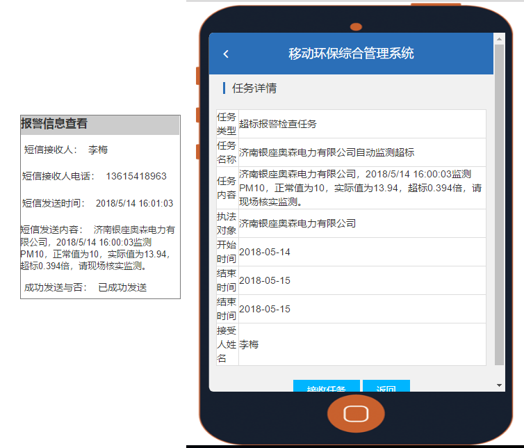

山东省生态环境大数据平台
--生态环境信息资源中心
个人信息
修改密码
找回密码
退出
在线监测数据
实时超标数据
污染源定位
报警综合查询
返回
起始时间
结束时间
企业名称
监测因子
PM10
PM2.5
NO2
SO2
CO
报警类型
超标报警
异常情况报警
开关设备报警
断线报警（包括设备故障报警）
查询
序号
报警类型
报警时间
企业名称
监测因子
正常值
实际值
是否自动报警
报警信息处理
1
超标报警
2018/5/14 16:00:03
济南银座奥森电力有限公司
PM10
10
13.94
是
报警查看
手工处理
×
